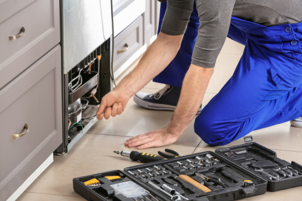

Repair

When stuff breaks, we fix it. Our home repair contractors can
save you the time and money it would otherwise cost to find and
install a replacement for your broken fixtures and household items.
We believe in a convenient, one-call solution where one call can get
one of our house repair contractors on the way to fixing whatever you
need fixed. Our professional repair services are backed by our Done
Right Guarantee
If your home’s countertop is starting to show its age—no matter whether it
has become dingy, chipped, or otherwise broken—you can count on us. We will
show up and make it look as good as new in no time
Doors play an overlooked but critical component to the functioning of your home.
If they are struggling to open, not keeping drafts out, or are otherwise broken,
contact us for the repairs that you need.
Drywall suffer cracks from settling? Fall victim to moisture? Suffer damage from kids
or mice? Give it the attention that it deserves by contacting our handymen regarding our
fast drywall repair services.
Does the grout in your home look damaged? Skip the headache of trying to fix it yourself
and call in our experts. We can repair grout in your bathrooms, kitchen, entryway, basement,
laundry room, and more!
Broken gutters on your home can cause water to be redirected, which can cause major damage to
the drywall, roof, basement, foundation, soffits, and fascia of your home. Get fast fixes from our team!
Keep your home beautiful—and your family safe—by getting handrails fixed in your home immediately. Our
handymen guarantee our workmanship and have an average of 10 years’ experience.
If your patio has aged support posts, loose handrails, or pliant wooden boards, it is time to call the professional
Santos from our team. We can fix all of these common problems and more.
Is your home’s screen door broken? No matter whether it has fallen off its tracks or no longer opens properly,
our team can help. Improve your home’s curb appeal and functionality with our help.
Our team provides exceptional (and fast!) repair services for sinks of all kinds. From repairing leaks that
could cause water damage to dealing with the resulting mold and mildew, you can trust us.
Don’t let you and your loved ones live with broken steps or stairs in your home. Contact our team and rest easy
knowing we guarantee our workmanship, are locally owned, and arrive on time!
From the bathroom to the kitchen to the entryway, our professional handymen can repair the tile in all of the
different rooms of your house. The best part? Our workmanship is 100% guaranteed!
Window frames can boost your home’s curb appeal, but they can also suffer the worst of all the elements. If you
have noticed that they are looking worse for the wear, contact us as soon as possible
If you are struggling to close your windows, or if you have noticed that the exteriors are chipped, we can help
with professional window repair services. That is no job too small for our team to handle!